Common name in Tamil : Sigapukokandam
Common name in Telugu : Thuddu ponna
Common name in Singhalese : Sirikanda
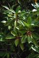
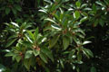
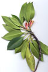
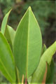
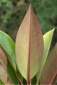
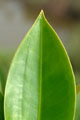
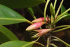
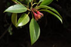
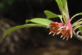
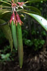
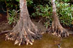
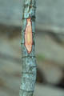
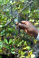
Diagnostic characters
Botany & morphology
Regeneration
Reproductive biology
Ecology
Distribution
Uses
Large trees up to 30 m tall with short buttresses; bark black, rough, fissured in a regular checkered pattern; knee-roots prominent. Leaves are crowded at the ends of branches; often reddish beneath. Flowers red to scarlet; fruits cigar shaped with red calyx cap.
Leaves simple, entire, opposite, elliptic-oblong, bluntly pointed at apex, cuneate at base, glossy green on the upper surface and reddish below, 8 - 22 x 5 – 10 cm, coriaceous; stipules and petioles reddish; petiole up to 4 cm long.
Flowers solitary, large, up to 3.5 cm long, regular, red to scarlet, calyx campanulate, 12 - 16 lobed; petals as many as calyx lobes, ciliate toward base; stamens enclosed in pairs by petals; style slender, filiform with 3 or 4 stigmatic lobes.
Fruit with hypocotyl up to 25cm long, cigar shaped, slightly angular, apex blunt.
Knee-roots as in B. cylindrica.
Growth pattern corresponds to Aubreville’s model.
Fruit remains attached to the seedling and dispersed with it. Germination modified epigeal, vivipary.
Pollination by butterflies and insects; pollen release by explosive mechanism, which is triggered by visiting pollinator.
On exposed shores where the mangrove belt is thin or depauperate.
Africa to Pacific islands through Egypt. Tropical Asia and Australia. In India occurs in tidal swamps along both the coast of the Peninsula and Andaman and Nicobar Islands.
Hard-wood stems used in building, fishing boats, houses, electric poles, charcoal making and to extract tannin. Leaves used as fodder.
Top of the page